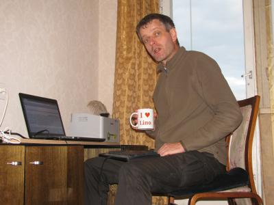

Lino News #2 -- October 2015
Dear friends of Lino,
it's almost two months ago that I announced to write "once in a month". Now finally here is the second newsletter about Lino!
One reason for being late is that something important has happened: Lino found a second core developer. Hamza from Tunisia started to contribute in september as a freelancer.
Hamza
It is exactly one month ago that I got a first e-mail from Hamza, a 28 years old Python developer living in Tunis who had seen my job offer. He has more than 3 years of experience as an Odoo/OpenERP developer and wanted "to join a team around an innovative project" and to improve his skills "with a new knowledge, especially in building a new project unlike Odoo where I have to work with their framework."
I don't want to leave unnoticed that about one week before this, during a car drive to Tallinn with my whole family, after having analyzed Lino's situation with my wife and recognized the need of finding an assistant, she asked "Did you pray for it?" I was surprised to discover that indeed I had never seriously bothered God with such minor problems of my little human projects. We closed our business analysis with a prayer song at 90 Km/h on the road between Pärnu and Tallinn. Believe it or not.
It became quickly evident that Hamza is the person Lino was waiting for. While until now I had been dealing with people whose primary motivation was to learn Python, this guy probably knows Python better than me. Lack of documentation is not a problem for him because he understands my code. His experience with the Odoo framework is visible. He is talented, open-minded and quickly learning.
Note that I also love to explain Lino to people with less experience who are learning Lino on their individual rhythm. I continue to offer free mentorship to everybody who wants it.
Noi
Lino Noi turned out to be an important tool for Hamza and me. Noi's first and most visible benefit is to be a central repository for our tickets at http://bugs.lino-framework.org/. But something even more important happens behind the public interface: it helps us to keep track of our working hours.
Some people don't understand this. For me it has always been both fascinating and important to keep track of my working hours. I love to be able to say e.g. that during the last week I have been working X hours on project A, Y hours on project B and Y hours on project C. Some people refuse to even try to transparently report what they are doing during their day. It is indeed not easy. One of the challenges is to classify your work. But I believe that working hours are measurable and that it does make sense. That's why I wanted more than just a ticketing system.
I was almost surprised when Hamza understood me and confirmed this. Thanks to Lino Noi I can see how much Hamza is working, I can verify that Hamza writes realistic invoices. And Hamza can see how much I am working. I am not paranoid, but it is good to have an infrastructure which sustains mutual trust.
Two days ago I received another beautiful confirmation that my vision is at least not completely foolish. The first end-users started to use Lino Noi for reporting their problems directly into our database instead of sending me e-mails. And one of them wrote:
I like your program very much. It might even help us to manage the social projects (define milestones, create tasks or assign them to a colleague, write reports, ...) with the possibility for all implied actors to consult them.
This was so beautiful because it does not only confirm Lino Noi as a ticketing system. It also confirms one of Lino's central features which postulates that reusable plugins should seamlessly integrate into very different applications.
I ♥ Lino
{kind=link}
Here you can see me testing an early prototype of the "I ♥ Lino" mug:
I plan to distribute a dozen of these mugs to Lino Welfare users in Eupen and Châtelet whose destiny is to use Lino for their daily work. I am not a fanatic of publicity because I believe that good things grow automatically, and because salesmen sometimes exaggerate positive aspects and neglect negative aspects of their product. But when working with these users, I hear that message "I love Lino" almost every day in many different wordings. It is the kind of message which reminded me Jesus' words "if these were silent, the very stones would cry out."
And it is true: Lin Welfare is a usable product for Belgian PCSWs which has grown out it's child diseases and is ready to be deployed to new customers. It is absolutely free software released under the AGPL. There is just some commercial and political stuff to handle.
These mugs are a sign of another revolution in Lino's lifecycle which is happening right now: we always knew that Lino needs a team of professional developers (and thus more users to pay them) if we want it to survive my inevitable passing away in some hopefully far future. It took me some time to realize that I cannot expect others to build that team of professional developers, that I must do this task myself. That decision was not easy because it implied that I must stop saying "Just let me code" and start taking my responsibility as an entrepreneur.
So Hamza and Lino Noi are only beginnings. I'll do my best to cope with all this. Hope with me!
Kommentare